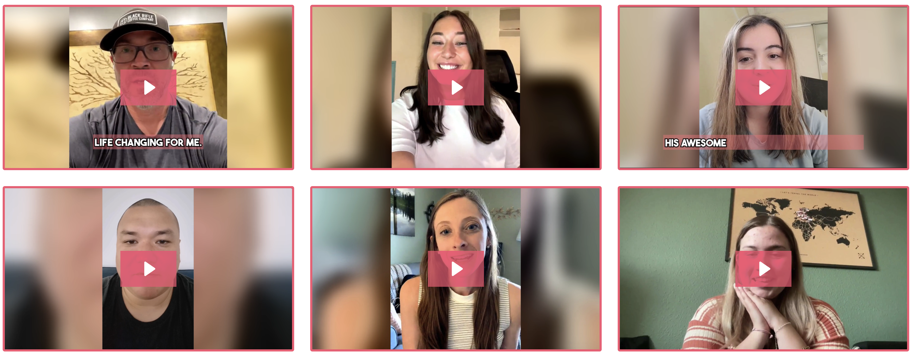

The Online OCD Program That 10,000+ People Are Using to Finally Break the Cycle
A licensed therapist's step-by-step ERP course is giving people with OCD something most have never had: a clear, structured plan for every intrusive thought — without waitlists, weekly appointments, or clinical jargon.
See why 10,000+ students have enrolled in this OCD program
See Current Offer → — Health & Consumer Desk
Updated March 24, 2026
9 min read
— Health & Consumer Desk
Updated March 24, 2026
9 min read

Sarah remembers the exact moment she knew something had to change. She was standing in her kitchen, hands raw from washing, running 40 minutes late for work — again. Her seven-year-old was asking why Mommy was crying. And the thought that had triggered the whole spiral? She couldn't even remember anymore.
"That's the thing about OCD that people don't understand," she says. "It's not about being neat or organized. It's about your brain holding you hostage with thoughts so terrifying you'd do anything to make them stop — even when you know, logically, that they don't make sense."
Sarah is one of roughly 2.5 million American adults living with Obsessive-Compulsive Disorder. And like most of them, she spent years cycling through Google searches, self-help books, and therapists who didn't specialize in OCD — before finding something that actually worked.
OCD affects approximately 1 in 40 adults in the United States, yet the average person waits 14-17 years from onset to receiving proper treatment. The primary barrier isn't willingness — it's access. OCD-specialized therapists are rare, expensive, and carry months-long waitlists in most cities.
That "something" was an online program called Master Your OCD — a self-paced ERP (Exposure and Response Prevention) course built by Nathan Peterson, a licensed clinical social worker who specializes in OCD and has amassed over 24 million views on YouTube helping people understand their condition.

Master Your OCD
A step-by-step ERP program by a licensed therapist. 67 videos, 7 chapters, 28 OCD theme-specific modules.
See Current Offer →ERP (Exposure and Response Prevention) is the gold-standard treatment for OCD, recommended by the American Psychological Association and the International OCD Foundation. "Master Your OCD" is one of the first comprehensive, self-paced ERP programs available online — making this evidence-based treatment accessible to anyone with an internet connection.
See why "Master Your OCD" has become one of the most popular OCD treatment programs available online.
Learn More → Instant access — one-time paymentWhy Most People With OCD Aren't Getting the Help They Need
OCD is one of the most treatable mental health conditions — when treated correctly. The problem is that most people never receive the right treatment.
General therapists, while well-intentioned, often use talk therapy approaches that can actually make OCD worse by providing the reassurance the OCD brain craves. What works — and what decades of clinical research supports — is ERP: Exposure and Response Prevention, a specialized form of cognitive behavioral therapy.
But here's the access problem: there are fewer than 1,000 OCD-specialized therapists in the entire United States. Sessions typically cost $150-$300 per hour, and most aren't covered by insurance. Waitlists in major cities can stretch 3-6 months. For people in rural areas, there may be no specialist within driving distance at all.
"I called seven therapists before I found one who even knew what ERP was," says James, a 34-year-old software engineer from Ohio. "And then the waitlist was four months. Four months of suffering because the system doesn't have enough people trained to help."
What Makes This Program Different
Nathan Peterson didn't create Master Your OCD because there weren't enough books about OCD. He created it because most people with OCD need something books can't provide: structure, specificity, and a step-by-step system they can follow on their worst days.

The program is structured across 7 chapters and 67 video lessons, each designed to build on the last. It starts with understanding your OCD — why your brain does what it does, why reassurance makes it worse — and progressively teaches you how to create your own exposure hierarchy, respond differently to spikes, and build a personalized game plan.
Chapter-by-Chapter Breakdown
- Chapter 1: Understand OCD — The OCD cycle explained, what recovery actually looks like, why treatment works
- Chapter 2: Setting the Stage — Identifying your obsessions and compulsions, finding your core fear, understanding reassurance
- Chapter 3: Let's Get Started — Creating exposures, building hierarchies, responding to OCD, tracking symptoms
- Chapter 4: Stay on Track — Practice frequency, handling new themes, maintaining progress
- Chapter 5: Other Treatments — Mindfulness, ACT, DBT, behavioral activation
- Chapter 6: Extra Help — Shame, depression, panic attacks, physical sensations
- Chapter 7: OCD Themes — 28 dedicated videos for specific OCD types
What impressed our review team most about this program is Chapter 7. Unlike generic OCD resources, it includes dedicated video modules for 28 specific OCD themes — from harm OCD and contamination to relationship OCD, pure OCD, scrupulosity, and many others. Students consistently cite this as the moment they felt "finally, someone is talking about MY OCD."
What Real Students Are Saying
"I genuinely feel like this course has changed my life. This literally explains everything you need to know about what OCD is and, crucially, how to beat it."
"The biggest change for me was learning how to stop engaging with compulsions and reassurance-seeking. I finally feel like I have the right tools and mindset to handle the tough days."
"This course has been revolutionary for me. The rumination video and how to tackle and undo compulsions — this has improved my life and brain greatly."
"Instead of always having to visit a psychologist, this course helps you reflect on your own challenges and equips you with practical solutions. I reduced my symptoms significantly."
Join 10,000+ students who've already taken back their lives from OCD. One payment, lifetime access, all future updates included.
View Official Website → One-time payment — instant accessWhat's Included — and What Sets It Apart
- Format: Self-paced online video course
- Content: 67 videos across 7 chapters
- OCD Themes: 28 dedicated theme-specific videos
- Bonuses: 18 fillable worksheets + 39-page guided journal
- Created By: Nathan Peterson, LCSW (licensed therapist)
- Credentials: Penguin Random House published author, 24M+ YouTube views
- Students: 10,000+ enrolled worldwide
- Access: Lifetime — one payment, no subscription
- Price: $397 one-time
Who Is This Program For?
- Anyone diagnosed with OCD or who suspects they have it
- People tired of compulsions running their day — checking, washing, reassurance-seeking, mental rituals
- Those who want to understand ERP and learn to actually do it — not just read about it
- People who can't access an OCD specialist — due to cost, location, or waitlists
- Anyone who prefers learning at their own pace — no appointments, no scheduling, no commute
- People dealing with any OCD theme — the 28 theme-specific modules cover virtually every variant
Important: This course is not a substitute for crisis intervention. If you're in a severe mental health crisis, please contact a crisis hotline or emergency services. The program is designed as a complement to therapy or as a starting point when therapy isn't accessible.
The Bottom Line
OCD is one of the most treatable mental health conditions — but only with the right approach. For decades, that approach (ERP) has been locked behind specialist waitlists and $200/hour therapy sessions that most people can't access.
Master Your OCD changes that equation. It puts a complete, structured, therapist-designed ERP program in the hands of anyone with an internet connection — for a one-time payment that costs less than two sessions with a specialist.
With 10,000+ students enrolled, 28 OCD theme-specific modules, and reviews that consistently describe the program as "life-changing," it represents one of the most accessible and comprehensive OCD treatment resources currently available.
If OCD is affecting your quality of life — whether you've been formally diagnosed or you recognize the patterns — Master Your OCD is one of the most thorough and accessible ERP programs we've reviewed. The combination of a licensed therapist creator, 28 theme-specific modules, and lifetime access makes it worth serious consideration, especially if specialist therapy isn't currently accessible to you.
Join 10,000+ students who've already started their OCD recovery journey. One payment, lifetime access, all 67 videos and 28 theme modules.
Access Master Your OCD Now → One-time $397 — lifetime access included